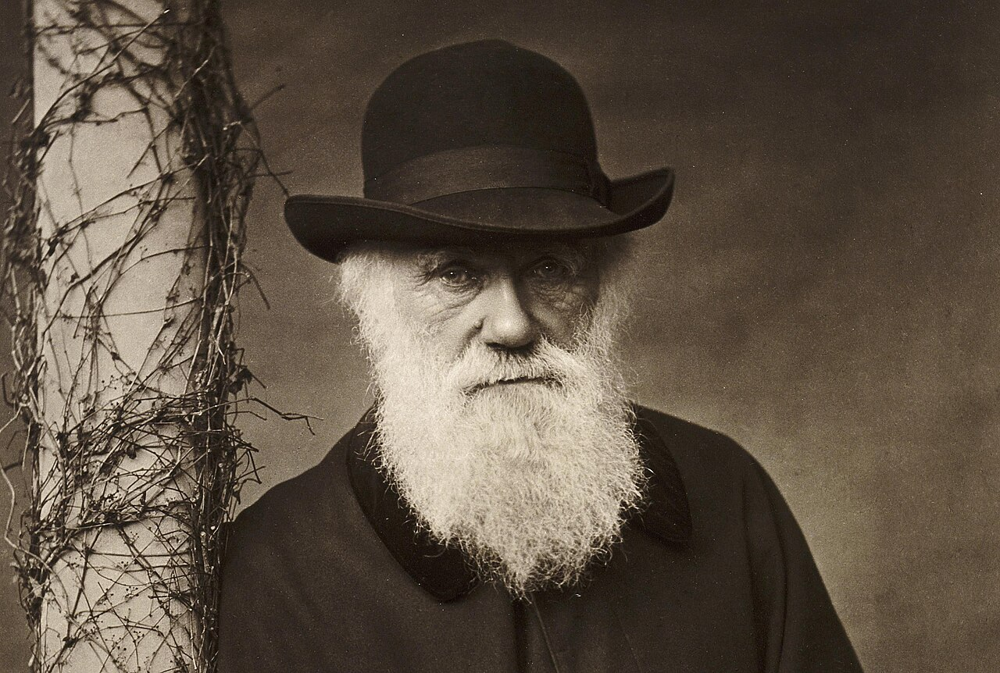

Charles Robert Darwin (Shrewsbury, 12 de fevereiro de 1809 – Downe, 19 de abril de 1882) foi um naturalista, geólogo e biólogo britânico. Tornou-se uma das figuras centrais da história da ciência ao demonstrar que as espécies se modificam ao longo das gerações e ao propor a seleção natural como mecanismo fundamental desse processo.
Seu livro A Origem das Espécies, publicado em 1859, reuniu evidências de biogeografia, paleontologia, anatomia comparada, criação de animais e observação da natureza. A obra ofereceu uma explicação unificadora para a diversidade e a adaptação dos seres vivos.

| Nome completo | Charles Robert Darwin |
|---|---|
| Nascimento | 12 de fevereiro de 1809 Shrewsbury, Inglaterra |
| Morte | 19 de abril de 1882 (73 anos) Downe, Inglaterra |
| Nacionalidade | Britânica |
| Áreas | História natural, geologia e biologia |
| Conhecido por | Evolução por seleção natural; descendência comum |
| Obra principal | A Origem das Espécies (1859) |
| Cônjuge | Emma Darwin |
| Sepultamento | Abadia de Westminster, Londres |
Biografia
Darwin nasceu em uma família próspera e intelectualmente ativa. Seu pai, Robert Waring Darwin, era médico; seu avô Erasmus Darwin foi médico, poeta e pensador naturalista. Em 1825, Charles iniciou medicina na Universidade de Edimburgo, mas não se adaptou às aulas e às práticas cirúrgicas. Ainda assim, aproximou-se da história natural e participou de investigações sobre organismos marinhos.
Em 1828 foi para Christ’s College, Cambridge, com a intenção familiar de seguir a vida clerical. Ali conheceu o botânico John Stevens Henslow e aprofundou seu interesse por coleta, geologia e observação. Henslow mais tarde recomendaria o jovem naturalista para a viagem que mudaria sua vida.
Darwin casou-se com sua prima Emma Wedgwood em 1839. O casal teve dez filhos, dos quais sete chegaram à idade adulta. A partir de 1842, a família viveu em Down House, em Kent, onde Darwin conduziu experimentos, escreveu a maior parte de suas obras e manteve extensa correspondência com pesquisadores de vários países.
A viagem do HMS Beagle
Entre dezembro de 1831 e outubro de 1836, Darwin participou como naturalista e acompanhante do capitão Robert FitzRoy de uma expedição do navio HMS Beagle. A missão principal era cartografar costas da América do Sul, mas Darwin pôde recolher espécimes, estudar formações geológicas e registrar a distribuição de plantas e animais.
Na América do Sul observou fósseis de grandes mamíferos extintos, terremotos, elevação de terrenos e semelhanças entre organismos vivos e fósseis. No arquipélago de Galápagos, notou variações entre populações de ilhas diferentes. Essas observações não produziram instantaneamente sua teoria, mas se tornaram peças importantes do argumento desenvolvido nos anos seguintes.
Para Darwin, a viagem constituiu sua verdadeira educação científica: o contato direto com a diversidade natural o ensinou a comparar evidências em escala geográfica e histórica.
Evolução e seleção natural
Após retornar à Inglaterra, Darwin passou a considerar que espécies não eram entidades fixas. Em 1837 começou cadernos privados sobre a “transmutação” das espécies. A leitura de Thomas Robert Malthus, em 1838, ajudou-o a perceber que, como mais indivíduos nascem do que podem sobreviver, pequenas diferenças herdáveis capazes de favorecer sobrevivência e reprodução tenderiam a se acumular.
Indivíduos de uma população apresentam diferenças, parte delas herdável.
Recursos limitados impedem que todos os descendentes sobrevivam e se reproduzam.
Características vantajosas tendem a ficar mais frequentes ao longo das gerações.
Linhas evolutivas distintas podem compartilhar ancestrais do passado.
Em 1858, Darwin recebeu de Alfred Russel Wallace um ensaio que descrevia uma ideia muito semelhante. Textos dos dois naturalistas foram apresentados conjuntamente à Sociedade Linneana. Darwin então preparou uma exposição mais ampla, publicada em 24 de novembro de 1859 como On the Origin of Species.
Principais obras
A Viagem do BeagleRelato das observações realizadas durante a expedição.
A Origem das EspéciesExposição das evidências da evolução e da seleção natural.
A Fertilização das OrquídeasEstudo de adaptações florais e polinização.
A Variação de Animais e Plantas sob DomesticaçãoInvestigação extensa sobre hereditariedade e seleção artificial.
A Descendência do HomemAplicação da teoria evolutiva à espécie humana e seleção sexual.
A Expressão das Emoções no Homem e nos AnimaisComparação das expressões emocionais sob perspectiva evolutiva.
A Formação do Húmus pela Ação das MinhocasEstudo do papel das minhocas na transformação do solo.
Legado científico
A seleção natural tornou-se um dos fundamentos da biologia. Durante o século XX, a teoria darwiniana foi integrada à genética mendeliana, à genética de populações e à paleontologia na chamada síntese evolutiva moderna. Descobertas posteriores em genética molecular permitiram investigar parentesco e mudança evolutiva diretamente no DNA.
Darwin não conhecia os mecanismos corretos da hereditariedade e algumas de suas hipóteses foram abandonadas. A ciência evolutiva atual é muito mais ampla que sua obra original, incorporando mutação, deriva genética, fluxo gênico, seleção sexual, desenvolvimento e processos ecológicos. Ainda assim, seu método de reunir múltiplas linhas de evidência permanece exemplar.
Após sua morte, Darwin foi sepultado na Abadia de Westminster, próximo a Isaac Newton. Seu impacto ultrapassou a biologia e influenciou debates em filosofia, antropologia, psicologia e história. Ideias sociais apresentadas posteriormente como “darwinismo social” não constituem uma consequência científica necessária da seleção natural e muitas vezes distorceram conceitos biológicos para justificar posições políticas.
Cronologia
- 1809Nasce em Shrewsbury, Inglaterra.
- 1825Ingressa na Universidade de Edimburgo.
- 1828Inicia estudos em Cambridge.
- 1831–1836Viaja ao redor do mundo no HMS Beagle.
- 1839Casa-se com Emma Wedgwood e publica seu diário da viagem.
- 1842Muda-se para Down House e redige um primeiro esboço da teoria.
- 1858Apresentação conjunta das ideias de Darwin e Wallace.
- 1859Publicação de A Origem das Espécies.
- 1871Publicação de A Descendência do Homem.
- 1882Morre em Down House e é sepultado em Westminster.
Fontes e leitura adicional
Verbete introdutório preparado para a Enciclopédia Loner. Para aprofundamento e conferência:
Última revisão: agosto de 2026 · Este verbete pode ser ampliado conforme o acervo cresce.